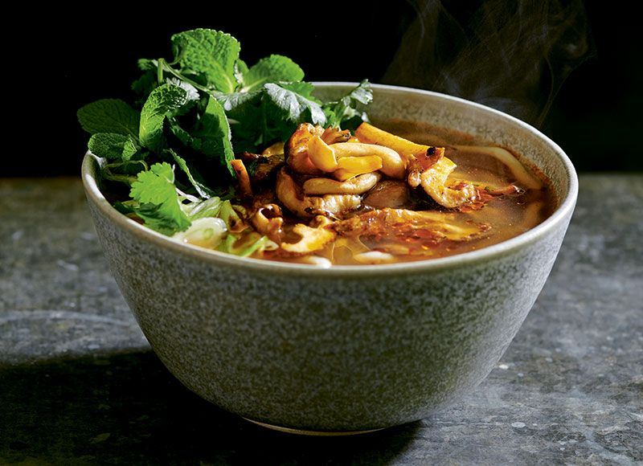

A light take on a Vietnamese pho packed with earthy, smoky mushrooms
and fresh herbs.

Ingredients
1 tbsp veg oil
100g shiitake mushrooms, roughly chopped
100g button mushrooms, roughly chopped
1 tbsp light soy sauce
1 tbsp veg oyster sauce / dark soy sauce
200g udon noodles
500ml veg stock
Stock base
2 tsp sriracha
2 tsp amai sauce
1 tsp light soy sauce
1 tsp malt vinegar
pinch of salt & sugar
Garnish
2 small handfuls of pea shoots
1 small handful of mint
1 small handful of coriander leaves
1 red chilli, deseeded & finely sliced
Instructions
Heat the oil in a frying pan or wok, add the chopped mushroom mix and
stir-fry for a minute. Add the light soy sauce and veg oyster sauce
(or dark soy sauce) and continue to stir-fry for a further 2 minutes
until cooked through.
Meanwhile, bring a saucepan of water to the boil and cook the noodles
according to the packet instructions.
Place the stock based ingredients in a small saucepan over a low heat
and bring to a simmer. Stir until the sugar and salt have dissolved.
Once the liquid starts to reduce, add the veg stock and mix well.
Divide the drained noodles between 2 serving bowls and pour over the
stock. Top with the cooked mushrooms and finish with a scattering of
pea shoots, mint, coriander and chilli.